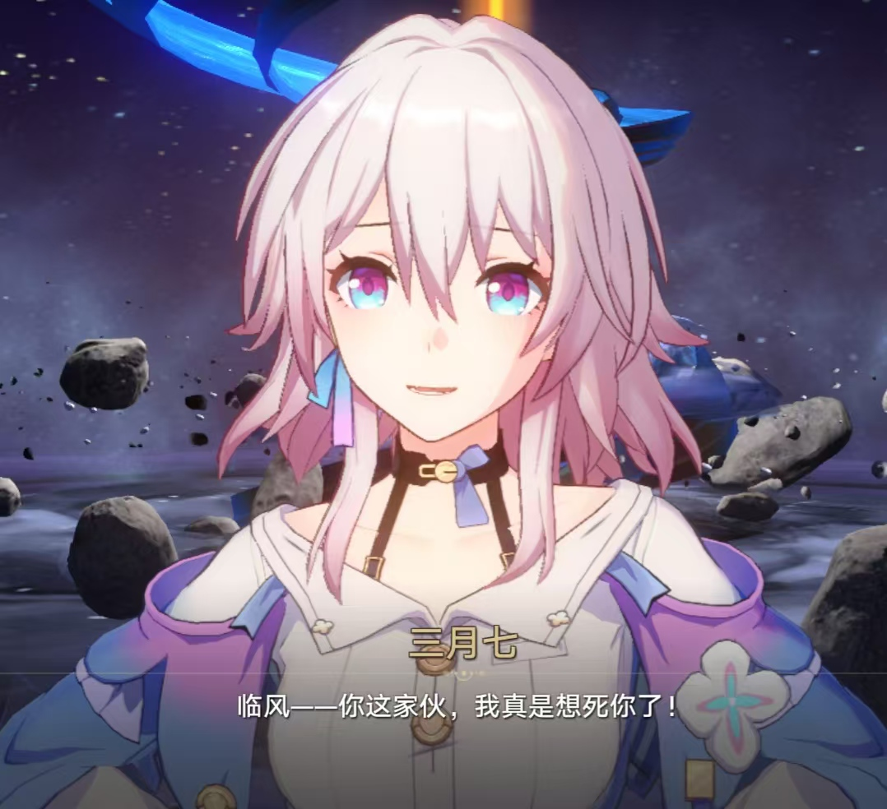

三月七，出自崩坏·星穹铁道。身世神秘。她曾被封存在宇宙六相冰中，在虚空沉睡无数岁月，过往记忆全部遗失。被星穹列车解封获救后，她以苏醒之日为自己取名三月七。她性格活泼开朗、乐观直率，喜欢记录旅途美好，外表元气灵动，内心柔软细腻，始终带着寻找自我、追寻过往的执念，是团队中极具感染力的治愈型角色。

苏醒之后，三月七正式加入星穹列车，跟随开拓者穿梭各个星球展开开拓之旅。她拥有独特的六相冰之力，擅长冰系防御、清除负面效果、为队友提供护盾，是队伍重要的防护辅助角色。她先后参与空间站危机、雅利洛-V冰封救世、仙舟罗浮动乱等主线剧情。随着冒险深入，她逐渐发现自己的记忆被人为封印，自身身世暗藏宇宙级秘密。在一次次危机历练中，她从懵懂贪玩的少女，不断蜕变成长，变得勇敢、沉稳，敢于直面自身的宿命与未知过往。
在多次星际危机中，三月七依靠冰系防御能力多次保护队友，化解团战危机，保障小队安全。她积极探寻自身被封印的记忆，不断突破自身能力限制。在漫长的开拓旅程中，她始终坚守初心、陪伴同伴，协助列车解决多处星核引发的灾难，以平凡的坚持和强大的守护力量，成为星穹列车开拓任务中不可或缺的关键成员。
在游戏中，三月七作为初始核心角色，奠定了星穹铁道温暖治愈的冒险基调，是玩家情怀最深的经典角色。人物传递出接纳遗憾、直面未知、向阳成长的积极价值观。其失忆寻我的成长故事，也让大众理解接纳不完美的自己、勇敢奔赴未来的人生态度，带给玩家正向的精神激励。